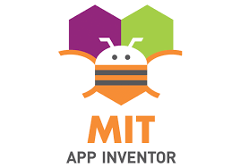
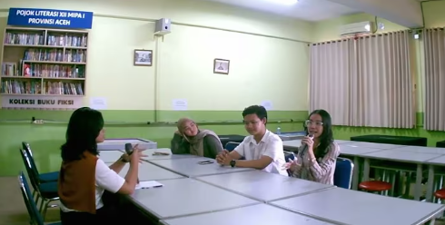
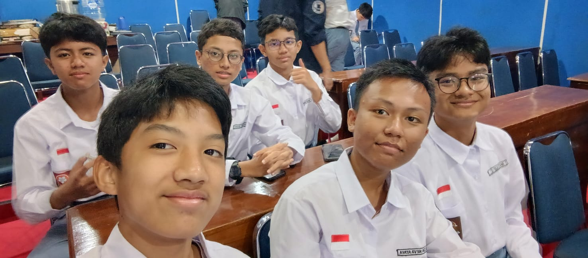
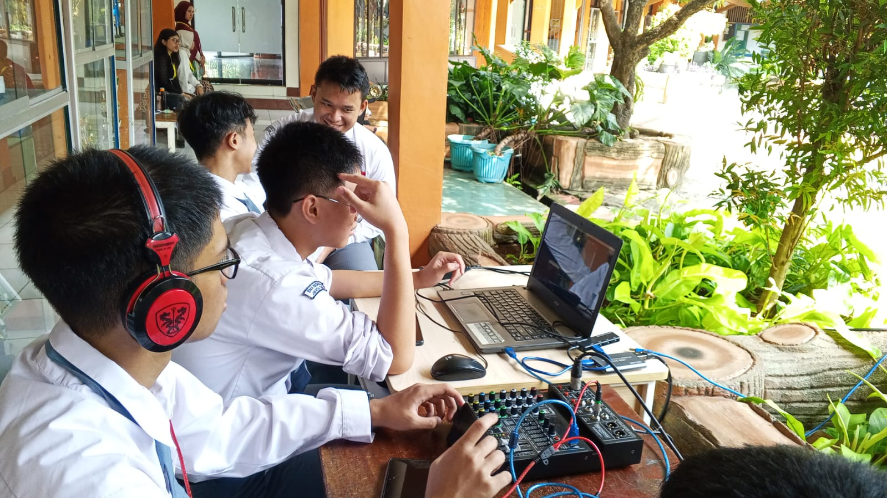
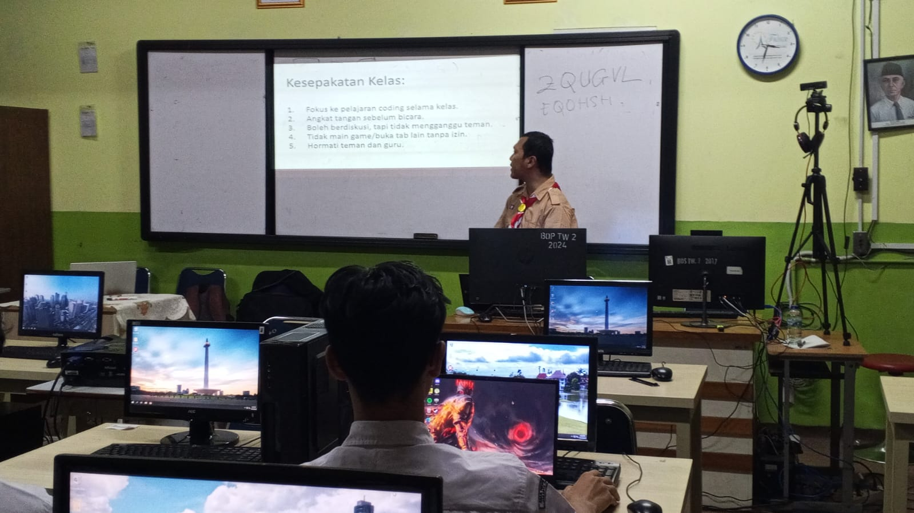
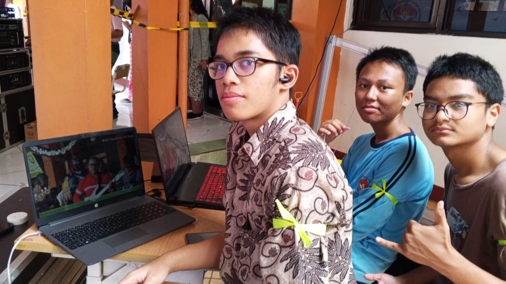
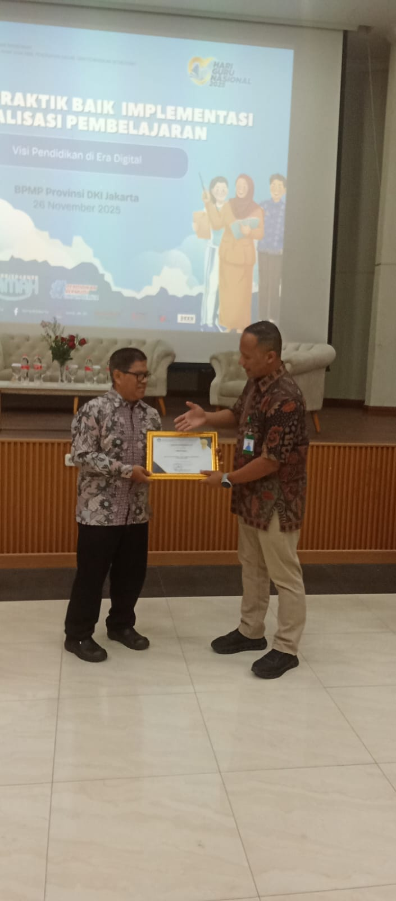
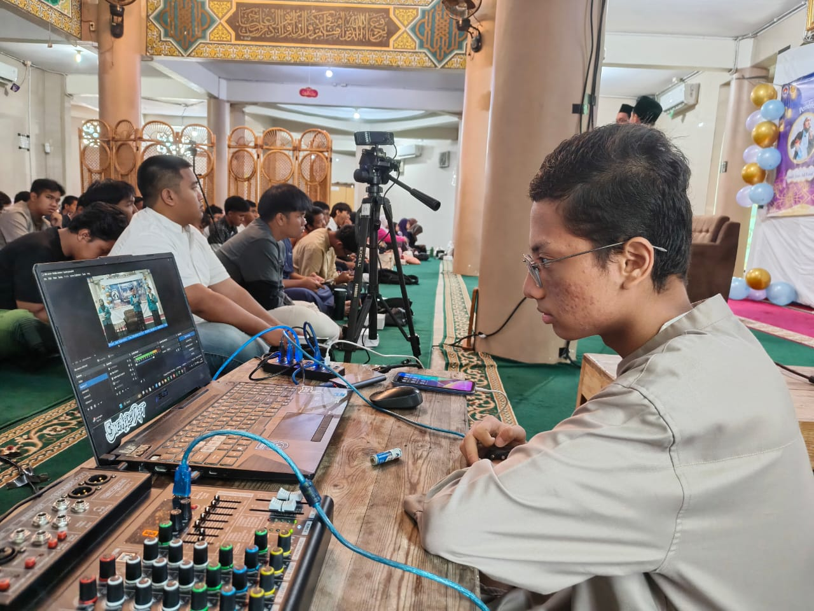
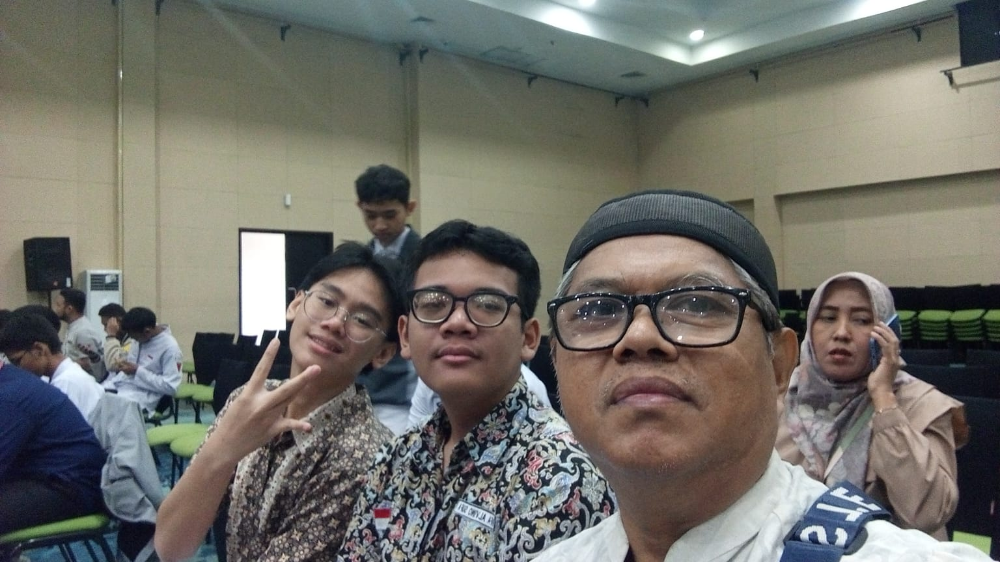
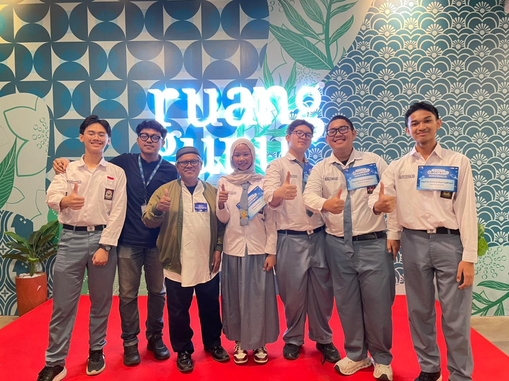

Filosofi EUREKA
Nama "Eureka" berasal dari bahasa Yunani yang berarti "Aku telah menemukannya!" - sebuah seru kegembiraan yang melambangkan momen ketika seseorang menemukan solusi atau ide brilian.
Semangat Penemuan Digital
Di era digital ini, setiap hari membawa peluang baru untuk berinovasi. Ekstrakurikuler Eureka hadir sebagai wadah bagi siswa-siswi yang memiliki passion dalam teknologi dan digital.
Kami percaya bahwa setiap siswa memiliki potensi untuk menciptakan solusi teknologi yang dapat mengubah dunia. Melalui pembelajaran kolaboratif dan eksplorasi kreatif, kami membantu siswa menemukan "momen Eureka" mereka sendiri.
// filosofi
"Εὕρηκα! - I have found it!"
Setiap proyek yang kami kerjakan adalah perjalanan menuju momen Eureka - saat di mana ide abstrak berubah menjadi inovasi konkret yang bermanfaat.
Visi Kami
Menjadi komunitas teknologi terdepan yang menghasilkan inovator-innovator muda yang siap menghadapi tantangan digital masa depan.
Misi Kami
Mengembangkan potensi siswa dalam bidang teknologi melalui pembelajaran praktis, kolaborasi, dan eksplorasi inovasi digital.
Nilai Kami
Kolaborasi, kreativitas, dan keberanian untuk berinovasi adalah fondasi utama dalam setiap kegiatan dan proyek yang kami lakukan.

Bapak Nagib Abdillah
Guru Pembina Ekstrakurikuler
"Membimbing siswa untuk menemukan momen Eureka dalam dunia teknologi"
Showcase Inovasi Digital
Dari ide kreatif hingga solusi nyata - inilah karya-karya yang telah diciptakan oleh anggota komunitas Eureka.

Aplikasi MIT App Inventor
Aplikasi mobile yang dikembangkan menggunakan MIT App Inventor. Aplikasi ini menyediakan antarmuka yang user-friendly dan fitur navigasi yang intuitif. Platform ini memungkinkan kami untuk mempraktikkan konsep visual programming dan pengembangan aplikasi mobile secara langsung, meskipun tanpa latar belakang coding yang kompleks.

Wirausaha Digital SMAN 81
Sebuah podcast edukatif yang membahas dunia wirausaha digital bersama alumni SMAN 81 Jakarta. Dalam sesi ini, salah satu anggota tim mewawancarai alumni yang membagikan pengalaman, tips, dan wawasan tentang dunia digital entrepreneurship.
Informasi Seputar EUREKA
Berita terbaru, prestasi, pengumuman, dan update kegiatan dari Ekstrakurikuler Informatika SMA Negeri 81 Jakarta.

Pelatihan Tim SMA 81 Jakarta di SMA 28
Kolaborasi pelatihan intensif tim EUREKA SMAN 81 Jakarta bersama SMA 28. Kegiatan ini berfokus pada penguasaan dasar-dasar pemrograman robotika dan pengembangan robot RC Line Follower untuk mempersiapkan kompetisi tingkat regional.

Livestreaming Perdana di Bulan Bahasa
Tim multimedia EUREKA sukses melaksanakan penyiaran langsung (livestreaming) perdana untuk memeriahkan rangkaian peringatan Bulan Bahasa di SMAN 81 Jakarta, mengintegrasikan sistem audio-visual digital secara realtime.

Program Belajar Python Ruangguru
EUREKA bekerja sama dengan Ruangguru menyelenggarakan program belajar Python terstruktur. Siswa dibekali logika dasar pemrograman, struktur data, dan penerapannya dalam memecahkan masalah komputasional sederhana.

Livestreaming Hari Guru
Dedikasi tim technical support EUREKA dalam menyukseskan livestreaming upacara dan perayaan Hari Guru Nasional di SMAN 81 Jakarta, menghadirkan siaran berkualitas tinggi untuk seluruh siswa dan wali murid.

Penghargaan Pembuatan Vidio Digitalisasi
SMAN 81 Jakarta mendapatkan penghargaan dari 20 sekolah terpilih nasional atas pembuatan video kreatif digitalisasi pembelajaran menggunakan Interactive Flat Panel (smartboard IFP) sebagai media ajar interaktif modern.

Livestreaming Jamaah 81
Penyiaran langsung kegiatan keagamaan akbar Jamaah 81 oleh tim EUREKA. Menggunakan konfigurasi multi-kamera dan streaming encoder untuk memfasilitasi partisipasi jemaah secara daring dengan lancar.

Workshop Literasi Digital dan Robotika Dasar
Workshop penguatan literasi digital serta pengenalan elektronika dan robotika dasar didukung oleh Dinas Pendidikan Provinsi DKI Jakarta, melatih kreativitas siswa dalam merancang sistem kontrol otomatis.

Semifinal Lomba UOB Ruangguru Perwakilan SMA Negeri 81 Jakarta
Perjuangan luar biasa perwakilan siswa terbaik SMAN 81 Jakarta di babak semifinal Lomba Akademik Nasional UOB Ruangguru. Prestasi ini membuktikan ketajaman analisis komputasional dan pemecahan masalah tim sekolah.